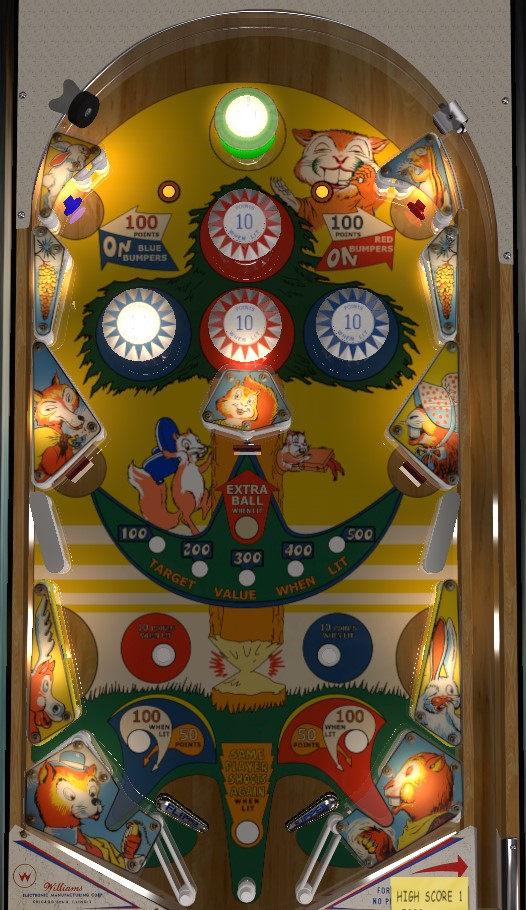

On the plunge, try to aim and nudge for one of the standup targets that lights one colour of bumpers, but once the ball is in the lower half of the table, shoot drop targets all day. Hitting all 3 of the drop targets around the table increases the value of each drop target by 100 per completion, up to a maximum of 500 per target, and reaching a target value of 300 lights the center drop target for extra ball.
The upper most bumper is a green passive bumper that scores 10 points or 100 when lit, and is lit intermittently based on pop bumper hits. The red and blue pop bumpers score 1 point, or 10 when lit. The upper left standup target scores 100 points and lights the left and right blue pop bumpers. The upper right standup target scores 100 points and lights the two center red pop bumpers. Lighting the blue bumpers also lights the lower right rollover button and the bottom left kicker; lighting the red bumpers also lights the lower left rollover button and the bottom right kicker.
Each drop target down scores the lit value on the playfield. The lit value starts at 100 points at the start of each ball, and increases by 100 each time all 3 drop targets on the table are knocked down, up to a maximum of 500 points per drop target. When the value is increased to 300 points, the center drop target also scores an extra ball. The two kicker lanes next to the flippers should hit the drop target on the opposite side of the table.
There are no in lanes or out lanes. Directly behind each flipper is a kicker lane that scores 50 points or 100 when lit, and fires the ball up-diagonally across the table. Lighting the blue bumpers lights the left kicker, and lighting the red bumpers lights the right kicker. Two inch mini-flippers are used, with a wider than usual gap between them. There is a center peg between the flippers, but it is so far below the flippers that it rarely helps keep a ball fully in play.
There is no end of ball bonus. Maximum 1 extra ball per ball in play. There is no playfield special.